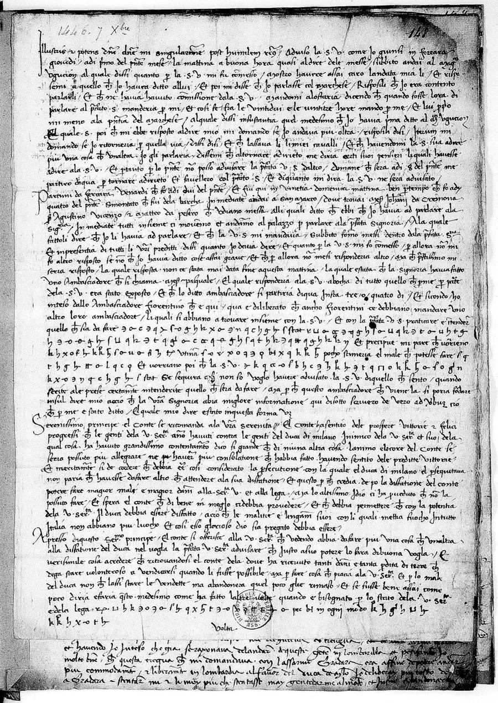
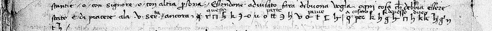
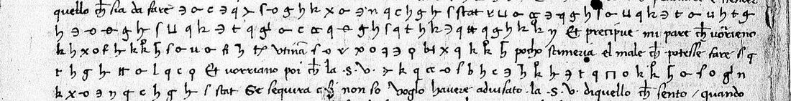
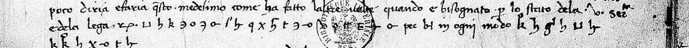

At a glanceKnown key applied · complete
- The letter
- Contucio, one of Francesco Sforza's envoys at Venice, to the Count, Venice, 7 December 1446. A two-page report of his audience with the Venetian Signoria, in clear, with nine lines in cipher.
- Where
- Bibliothèque nationale de France, italien 1583 f. 148 (the Sforza archive taken to France in 1499–1500). DECODE R7911, catalogued there with no decipherment and no names.
- The cipher
- Graphic signs: two to five signs for the common letters, signs for syllables and common words (per, che, con, quale, et), and code words for names (stat for the Duke of Milan).
- How it was deciphered
- With the envoys' own key, an 18th-century copy in Milan headed with their names (Carteggio Sforzesco cart. 1597 no. 14, DECODE R5314). A decipherment written at the time over the two lines on the back agrees with it word for word.
- What it says
- Venice and Florence wanted to settle with Sforza "the destruction of the Duke of Milan", his losses and their compensation, and a peace with a power hidden behind a code word; and twice Cosimo de' Medici is quoted on what to offer and say.
- Still open
- One code word, utinam, which is not on the key copy.
The catalogue entry this page closes (no. 1309) also named ff. 151 and 152 of the same volume. Neither has any cipher: see the documents. The Duke of Milan's own cipher slips of the same months, in the same volume, are in another key and have their own page; so do two Sforza letters of May 1446, in a third.
01 The documents

Mazzatinti's inventory of the Sforza papers in Paris (1883) lists three letters from Sforza's envoys at Venice dated 7 December 1446:
- f. 148 (DECODE R7911): "Lettera di Contucio a Fr. Sforza (Venezia 7 decembre). In cifre." Two pages and an address. Contucio reports his audience: the Signoria will send Ser Pasquale [Malipiero] to the Count as its ambassador, Florence will send another, and he gives the Count's speech of congratulation on the Venetian victories over the Duke's troops, with news from Lombardy. Nine lines are in cipher.
- f. 151 (DECODE R7912): "di Giovanni Stavoli, M. Giordani, V. Amidani, Agostino, Contucio a F. Sforza", not marked as cipher. The DECODE photograph shows clear leaves only: a heavily corrected minute in Sforza's voice and his letter of the same day from Pesaro to Boccaccino and Nicodemo, with the foot of the envoys' joint letter laid over it.
- f. 152 (DECODE R7913): the envoys' joint letter of 7 December, all in clear ("Questa matina la Ill. S. ne respose ad lambassiata exposta per mi Contucio ..."), signed by Giovanni Stavoli, Agostino, Contucio, Matteo and Vincenzo.
So the cipher of the entry is all on f. 148. The ital. 1583 volume is not digitised by the BnF (microfilm only), and these DECODE images are binarized microfilm scans.
02 The key
The Milan State Archives keep 18th-century copies of the Sforza chancery's 15th-century keys (Carteggio Sforzesco cart. 1597, on DECODE as anonymous key records). No. 14 is headed Angelus cum cifra Vincentij and names its users: Johannes de Stavolis, Augustinus, Baptista, Matheus, et Vincentius. These are Sforza's envoys at Venice in 1446, the men who sign with Contucio. The project had looked at this key in September for another letter and set it aside; in October it turned up on a sibling letter of Angelo Simonetta's from Venice (f. 89, "Cum cifra Vincentii", DECODE R7900), whose clear text is filed with it (f. 90).
The key gives two to five signs for most letters (a: o, -o, ϙ; e: ƅ, 5, ʒ; o: four forms of q; u: Π, ⊏, ⊔, E), a table of vowel-and-consonant syllables, fifteen word signs, a column of names (stat = lo Duca de Milano, Δ = la Signoria Vostra, pp = the Signoria of Venice, ppp = the Count) and nulls. Its code word stat appears twice in f. 148, and the first cipher line reads at once: "tanto per la desfatione del Duca de Milano". The writer draws some signs in his own way (the key's ƅ for e as an h with a hooked bowl, its h for s as a k, its "kp" for q as "xp"); the table is in targets/contucio1446/key.md.

A hand of the time wrote a decipherment above the two cipher lines on the back. It agrees with the key sign for sign, and it supplies one code word missing from the copy: pec = Cosimo. The recto passages have no such gloss.
03 The reading

Cipher in bold, the clear text around it in roman. [?] marks one sign of uncertain shape.
... li quali si abbiano a trovare insieme con la S. V. Et con la prefata V. S. pratticare e intendere quello che sia da fare tanto per la desfatione del Duca de Milano quanto de la vostra perdeta, et del vostro danno, et de lo restoro d'essi. Et precipue mi pare che vorieno se facesse la pace con [utinam], la quale fatta che fosse, pocho stimeria el male che potesse fare lo Re de Ragona[?]. Et vorriano poi che la S. V. personalmente se trovasse a la disfatione del Duca de Milano. Et sequira altro non so, voglo havere advisato la S. V. di quello che sento.
In English. ... who are to meet with Your Lordship and, with Your Lordship, discuss what is to be done both for the destruction of the Duke of Milan and about your loss and your damage, and the making good of them. And above all it seems to me they would want peace made with [utinam]; once it was made, they would think little of the harm the King of Aragon could do. And then they would want Your Lordship to be present in person at the destruction of the Duke of Milan. What else will follow I do not know; I wanted Your Lordship to know what I hear.

At the foot of the page, after the Count's offer to the Signoria (he would give up what little he has left for the Duke's ruin, "as he has done the other times when it was needed for the state of Your Serenity and of the League"):
... quando e bisognato per lo stato dela V. Ser.ta e dela lega. Questa tale oferta parve[?] a Cosimo che in ogni modo se devesse fare.
In English. This offer, Cosimo thought, should in any case be made.
And on the back, after the Count asks the Signoria where it wants him in the coming season:
Essendone advisato fara di buona voglia ogni cosa che debbia essere stato e di piacere ala V. Ser.ta. Ancora: questa parte parve a Cosimo se devesse dire.
In English. Once told, he will gladly do whatever is to the state's and Your Serenity's pleasure. Further: this part too, Cosimo thought, should be said.
In the war of 1446–47 Venice and Florence were allied with Sforza against Duke Filippo Maria Visconti, who was at the same time trying to win his son-in-law back. The cipher keeps out of reach of a reader the allies' war aims ("the destruction of the Duke of Milan", with Sforza present in person), Sforza's claim for his losses, and the fact that Cosimo de' Medici had a hand in what the envoys offered and said at Venice.
04 Method and checks
- Images: DECODE R7911 (recto, verso, address), R7912 and R7913, fetched in the project's sweep of the ital. 1583 records on 23 October 2026; the key R5314 from the same sweep of the Milan keys.
- Every cipher sign was transcribed from crops at three to four times size, line by line, as a key value plus a variant number (226 signs, 42 distinct, and one null). Three pairs of look-alikes were told apart on the image: a round u (p) and a box u (u) in line 26, which give "vostra" and "perdeta"; an o with a bar at the left (a) and an o crossed by a bar (et) in line 27; a double t (r) and a double t with a flourish (con) in line 28.
- Deciphered with
decode.py: 225 of the 226 signs take a value from the key or the gloss (99.6%), and every one of them stands in a word of the reading above. - The verso passage agrees with the contemporary interlinear decipherment over its 31 signs.
- Statistical check against a 16th-century Italian letter model (
docs/_validate.py): the reading scores −1.865 per letter, random keys −4.04 (z 5.6): pass. - The key identification was also checked on the sibling pair R7900/R7901: the cipher's "che lo stato de stat" stands where the clear text has "che lo stato del Duca de Milan".
05 Still open
- The code word utinam (written vtinã), f. 148r line 28: "la pace con [utinam]", a power with which peace would make the King of Aragon of little account. It occurs once and is not on the 18th-century key copy, whose code column has four entries without labels. Left unread.
- Two sign shapes are uncertain: the last sign of "Ragona" (f. 148r 29) and the first of "parve" (f. 148r 50, under the stamp). The sense fixes both.
Full texts
The transcription and the decryption of every document on this page, so that the reading can be used and checked. Short files are shown here; all are in the repository.
Contucio to Francesco Sforza, Venice, 7 Dec 1446 (f. 148r-v), the cipher passages in their clear context
Contucio reports his embassy to the Venetian Signoria in the war of 1446 against Filippo Maria Visconti. The cipher says what Venice and Florence want to settle with Sforza (the destruction of the Duke of Milan, Sforza's losses and their compensation, a peace with a power named by a code word, and Sforza present in person at the Duke's ruin), and twice that Cosimo de' Medici advised what to offer and say.
Transcription
# BnF italien 1583 f. 148 (DECODE R7911, images P1 = recto, P2 = verso), Contucio to Francesco Sforza, Venice, 7 Dec 1446.
# Sign-level transcription of every cipher passage, by Opus 5.5 (cyphersolver), 6 Nov 2026, from the DECODE images
# (binarized microfilm scans, IMG_R7911_I35661_P1/P2). Line numbers are the page's own lines, counted from the scan.
#
# Format: <folio>.<line> TAB tokens. Clear text in braces {...}, copied as far as needed for context.
# Sign labels are defined in key.md ("Sign labels"): a letter value plus a variant number for each homophone
# (a1 a2 a3, e1 e2 ...), the key sheet's word signs by their value (per, che, con, quale, et), the code words as
# written (stat, pec, utinam), null for the starred mark. A trailing ? marks a sign whose shape is uncertain.
# f. 151 (R7912) and f. 152 (R7913) have no cipher: see NOTES.md.
f148r.26 {quello che sia da fare} t1 a1 n1 t1 o1 per l2 a1 d1 e1 s1 f1 a1 t1 i1 o1 n1 e1 d1 e1 l1 stat q1 u1 a1 n2 t1 o1 d1 e1 l2 a1 u1 o1 s1 t1 r1 a1 p1 e1 r1 d1
f148r.27 e1 t1 a1 et d1 e1 l1 u1 o1 s1 t1 r1 o1 d2 a1 n1 n2 o1 et d1 e1 l1 o1 r1 e1 s1 t1 o1 r2 o1 d1 e1 s1 s1 i2 {Et precipue mi pare che vorieno}
f148r.28 s1 e1 f1 a2 c2 e2 s1 s1 e1 l1 a1 p1 a1 c1 e1 con utinam l1 a1 quale f2 a2 t2 t1 a3 che f1 o1 s1 s1 e2 {pocho stimeria el male che potesse fare} l1 o1
f148r.29 r1 e1 d1 e1 r2 a2 g1 o1 n1 a3? {Et vorriano poi che la S. V.} per s1 o1 n2 a1 l1 m1 e1 n1 t1 e2 s1 e2 t1 r1 o1 u2 a2 s1 s2 e1 a1 l1 a2 d1 i1
f148r.30 s1 f1 a1 t1 i2 o1 n1 e1 d1 e1 l1 stat {Et sequira altro non so, voglo havere advisato la S. V. di quello che sento}
f148r.50 {... per lo stato dela S. V. e dela lega,} q2 u1 e1 s1 t1 a2 t2 a2 l1 e2 o1 f1 e1 r1 t1 a1 p2? a3 r2 u4 e2 a2 pec che {in ogni modo} s1 e1 d1 e1 u1 e2
f148r.51 s1 s1 e1 f1 a1 r1 e2
f148v.6 {... ala V. Ser.ta, ancora :} null q1 u2 e2 s1 t1 a1 p1 a2 r2 t1 e1 p2 a2 r1 u3 e2 {/} a3 pec s1 e1 d1 e1 u2 e1 s1 s1 e2 d1 i2
f148v.7 r1 e1 {/}Decryption
# Decryption of transcription.txt with key.md (decode.py). Letters as deciphered, one per sign, spaced by sign;
# word signs and codes in [CAPITALS]; ? after a value = sign shape uncertain; clear text in braces.
f148r.26 {quello che sia da fare} t a n t o [PER] l a d e s f a t i o n e d e l [DUCA DE MILANO] q u a n t o d e l a u o s t r a p e r d
f148r.27 e t a [ET] d e l u o s t r o d a n n o [ET] d e l o r e s t o r o d e s s i {Et precipue mi pare che vorieno}
f148r.28 s e f a c e s s e l a p a c e [CON] [utinam?] l a [QUALE] f a t t a [CHE] f o s s e {pocho stimeria el male che potesse fare} l o
f148r.29 r e d e r a g o n a? {Et vorriano poi che la S. V.} [PER] s o n a l m e n t e s e t r o u a s s e a l a d i
f148r.30 s f a t i o n e d e l [DUCA DE MILANO] {Et sequira altro non so, voglo havere advisato la S. V. di quello che sento}
f148r.50 {... per lo stato dela S. V. e dela lega,} q u e s t a t a l e o f e r t a p? a r u e a [COSIMO] [CHE] {in ogni modo} s e d e u e
f148r.51 s s e f a r e
f148v.6 {... ala V. Ser.ta, ancora :} q u e s t a p a r t e p a r u e {/} a [COSIMO] s e d e u e s s e d i
f148v.7 r e {/}Reading
# Contucio to Francesco Sforza, Venice, 7 Dec 1446 (BnF italien 1583 f. 148, DECODE R7911): the cipher passages read Deciphered with ASMi Carteggio Sforzesco cart. 1597 no. 14 (DECODE R5314), `key.md`; sign by sign in `transcription.txt`, decoder output `decryption.txt`. Cipher in **bold**, clear text in roman around it, word division and modern punctuation added. [?] after a word = one sign of uncertain shape; [utinam] = code word with no value. u/v rendered by sense. ## f. 148r lines 22-30 The Signoria will send its own ambassador to Sforza, Ser Pasquale [Malipiero]; the Florentine ambassador says Florence too will send another ambassador; they are to meet with the Count. Then: > ... li quali si abbiano a trovare insieme con la S. V. Et con la prefata V. S. pratticare e intendere quello che sia > da fare **tanto per la desfatione del Duca de Milano quanto de la vostra perdeta, et del vostro danno, et de lo > restoro d'essi.** Et precipue mi pare che vorieno **se facesse la pace con [utinam], la quale fatta che fosse,** > pocho stimeria el male che potesse fare **lo Re de Ragona[?].** Et vorriano poi che la S. V. **personalmente se > trovasse a la disfatione del Duca de Milano.** Et sequira altro non so, voglo havere advisato la S. V. di quello che > sento. English: > ... who are to meet together with Your Lordship, and with Your Lordship discuss and learn what is to be done, **both > for the destruction of the Duke of Milan and about your loss and your damage, and the making good of them.** And > above all it seems to me they would want **peace made with [utinam]; once it was made,** they would think little of > the harm **the King of Aragon** could do. And then they would want Your Lordship **to be present in person at the > destruction of the Duke of Milan.** What else will follow I do not know; I wanted to have told Your Lordship what I > hear. ## f. 148r lines 48-51 Contucio has reported the Count's speech to the Signoria: the Count would abandon the little he has left for the Duke's ruin, and do it again "as he has done the other times when it was needed for the state of Your Serenity and of the League". Then: > ... quando e bisognato per lo stato dela V. Ser.ta e dela lega. **Questa tale oferta parve[?] a Cosimo che** in ogni > modo **se devesse fare.** English: > ... when it was needed for the state of Your Serenity and of the League. **This offer, Cosimo [de' Medici] thought, > should** in any case **be made.** ## f. 148v lines 4-7 The Count asks the Signoria to say what it wishes him to do in the coming season, whether in winter quarters, with a lord or with another person, and he will do it gladly. Then: > Essendone advisato fara di buona voglia ogni cosa che debbia essere stato e di piacere ala V. Ser.ta. Ancora: > **questa parte parve a Cosimo se devesse dire.** English: > Once informed, he will gladly do anything that is to be the state's and Your Serenity's pleasure. Further: **this > part too, Cosimo thought, should be said.** A hand of the time wrote a decipherment above these two lines: *questa* · *parte* · *parve* · *a cosimo* · *se devesse* · *dire*. It agrees with the key word for word and gives the code word *pec* = Cosimo. ## Counts (decode.py) 226 cipher tokens (letters, the word signs et, per, che, con, quale, and the code words stat ×2, pec ×2, utinam ×1), plus one null. 225 are given a value (99.6%) and all 225 stand in words that build the sentences above. Open: *utinam* (one code word). Uncertain shapes: the last sign of *Ragona* (a3 or o1) and the first sign of *parve* on f. 148r line 50, under the library stamp; sense fixes both.
Translation
# Contucio to Francesco Sforza, Venice, 7 Dec 1446 (BnF italien 1583 f. 148): English of the cipher passages Deciphered passages in **bold**, the clear text around them in roman. Italian in `reading.md`. **f. 148r, lines 25-30.** ... who are to meet together with Your Lordship, and with Your Lordship discuss and learn what is to be done, **both for the destruction of the Duke of Milan and about your loss and your damage, and the making good of them.** And above all it seems to me they would want **peace made with [code word *utinam*, not identified]; once it was made,** they would think little of the harm **the King of Aragon** could do. And then they would want Your Lordship **to be present in person at the destruction of the Duke of Milan.** What else will follow I do not know; I wanted to have told Your Lordship what I hear. **f. 148r, lines 49-51.** ... as he has done the other times when it was needed for the state of Your Serenity and of the League. **This offer, Cosimo [de' Medici] thought, should** in any case **be made.** **f. 148v, lines 5-7.** Once informed, he will gladly do anything that is to be the state's and Your Serenity's pleasure. Further: **this part too, Cosimo thought, should be said.**
Key: key.md
06 Sources
- Bibliothèque nationale de France, italien 1583 ff. 148, 151, 152, via DECODE R7911, R7912, R7913 (free login).
- Key: Archivio di Stato di Milano, Carteggio Sforzesco cart. 1597 no. 14, DECODE R5314.
- Sibling: f. 89 (Angelo [Simonetta], Venice, 30 September 1446, "Cum cifra Vincentii") and its clear text f. 90, DECODE R7900 and R7901.
- G. Mazzatinti, "Inventario delle carte dell'archivio sforzesco contenute nei codici italiani 1583–1593 della Biblioteca nazionale di Parigi", Archivio storico lombardo 10 (1883), p. 233.
Files: targets/contucio1446/ (sign-by-sign transcription, key, decoder, reading, notes).